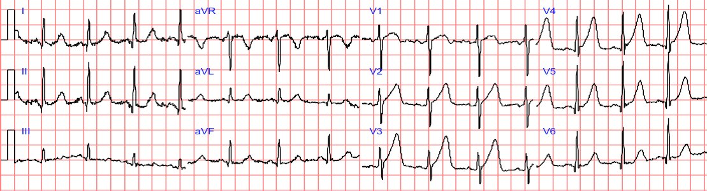
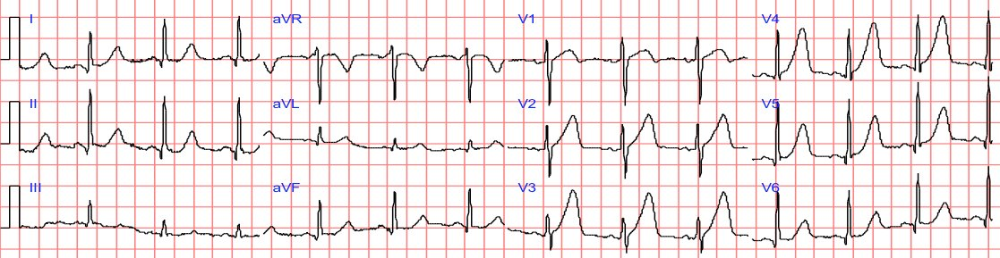
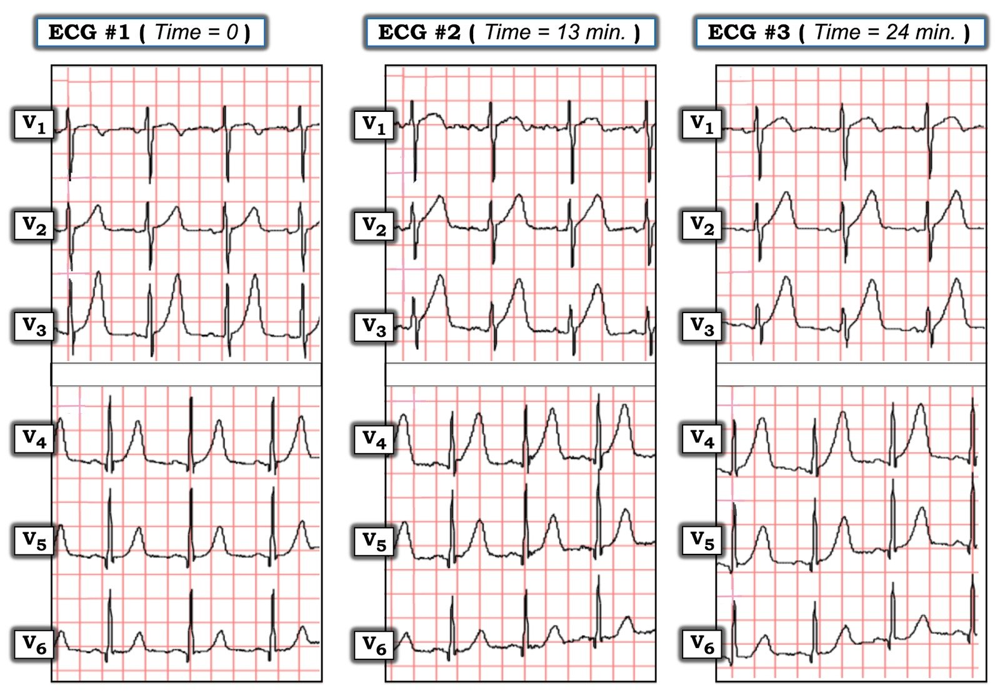

23/10/2022 — Phụ nữ 30 tuổi đau vùng cơ thang. Lộ trình HEART = 0. Máy tính đọc điện tâm đồ “Bình thường”. Thực tế: điện tâm đồ có giá trị chẩn đoán tắc LAD.
Bản dịch tiếng Việt của bài "30 yo woman with trapezius pain. HEART Pathway = 0. Computer “Normal” ECG. Reality: ECG is Diagnostic of LAD Occlusion." – Dr. Smith’s ECG Blog. Giữ nguyên toàn bộ 7 hình ảnh và 3 video của bản gốc.
Đây là bài đăng lại của ca bệnh tuyệt vời này:
Echocardiography, even (or especially) with Speckle Tracking, can get you in trouble. The ECG told the story. (Siêu âm tim, kể cả (hay nhất là) khi có đánh dấu mô (speckle tracking), có thể khiến bạn gặp rắc rối. Điện tâm đồ đã kể lại câu chuyện.)
Một phụ nữ ngoài 30 tuổi hoàn toàn khỏe mạnh, không có yếu tố nguy cơ tim mạch nào, đột ngột đau vùng cơ thang hai bên, lan vòng ra trước tới cổ họng. Cơn đau tự hết sau khoảng 5 phút, nhưng rồi tái phát và kéo dài liên tục hơn một giờ. Bệnh nhân gọi 911.
Đội cấp cứu ngoài viện (EMS) ghi các điện tâm đồ trước viện sau đây:
Thời điểm 0:

Thời điểm = 13 phút


Sóng T ở V2 giờ cao hơn và đầy đặn hơn, đoạn ST thẳng hơn.
Sóng T ở V3 không cao hơn, nhưng đầy đặn hơn do đoạn ST thẳng hơn
Đây là các sóng T tối cấp, CÓ GIÁ TRỊ CHẨN ĐOÁN tắc LAD.
Thời điểm = 24 phút


Độ sâu sóng S đang giảm dần
Các điện tâm đồ trước viện này đã bị thất lạc và không ai xem.
Bệnh nhân tới khoa cấp cứu (ED).
Cơn đau hết hoàn toàn sau khi dùng nitroglycerin
Ít phút sau, điện tâm đồ này được ghi tại khoa cấp cứu, khi bệnh nhân mới hết đau được chốc lát:

Máy tính đọc: Điện tâm đồ bình thường.
Tuy nhiên, sóng T vẫn tối cấp một cách bất thường; máy tính hầu như không bao giờ nhận ra điều này.
Sóng T ở V2 nhỏ hơn. QTc là 444 ms.
Thử dùng công thức 4 biến thì sao?
STE 60 ở V3 = 1.5 mm, biên độ sóng R ở V4 = 15 mm, QRS ở V2 = 8.5
Giá trị công thức là 19.38, cho thấy tắc LAD
(Điểm cắt chính xác nhất là 18.2 — giá trị ＞ 18.2 có xác suất cao là tắc LAD).
Theo phần lớn các quy tắc, bệnh nhân này có điện tâm đồ không có giá trị chẩn đoán.
Tuy nhiên, nếu chú ý tới các chi tiết tinh tế, nhất là khi so với các điện tâm đồ trước viện không ai xem kia, thì điện tâm đồ này có giá trị chẩn đoán tắc LAD, nhiều khả năng đã tái tưới máu tự phát.
Troponin lần đầu dưới giới hạn phát hiện (LoD).
Nếu bạn dùng một công cụ như thang điểm HEART:
1. H History (Bệnh sử): đau không điển hình (vùng cơ thang) (điểm = 0)
2. E EKG (Điện tâm đồ): điện tâm đồ âm tính (điểm = 0)
3. A Age (Tuổi): = 0
4. R Risk factors (Yếu tố nguy cơ) = 0
5. T: Troponin = 0 [troponin lần đầu (loại thế hệ hiện hành, không phải độ nhạy cao) thấp hơn giới hạn phát hiện).
Tổng điểm HEART = 0. Nguy cơ biến cố bất lợi trong 30 ngày thấp hơn 1.7%. Một số người có thể cho bệnh nhân về nhà.
Nhưng có thể bệnh nhân đang bị tắc LAD cấp và tình trạng sẽ còn xấu hơn nữa.
Các bác sĩ đã làm siêu âm tim tại giường và thậm chí dùng cả kỹ thuật đánh dấu mô (speckle tracking) để đánh giá sức căng (strain):
hyperacute T-waves standard echo nstemi vid 3 (sóng T tối cấp – siêu âm tim chuẩn – NSTEMI – video 3) của Stephen Smith trên Vimeo.
Tôi nghĩ có lẽ có rối loạn vận động thành trước, nhưng việc này rất khó. Họ đọc là bình thường.
Dưới đây là vài đoạn hình có sức căng (strain), hay “đánh dấu mô” (speckle tracking), trên siêu âm tim tại khoa cấp cứu:
hyperacute T-waves speckle 1 x4 (sóng T tối cấp – đánh dấu mô 1 x4) của Stephen Smith trên Vimeo.
hyperacute T-waves speckle 2 x4 (sóng T tối cấp – đánh dấu mô 2 x4) của Stephen Smith trên Vimeo.
Với tôi, các hình này trông giống rối loạn vận động thành trước, nhưng tôi đã đưa chúng cho một bác sĩ nội trú chuyên khoa siêu âm (fellow) của chúng tôi, người rất quan tâm tới lĩnh vực này, xem.
Cô ấy nói:
Ca này khó. Tôi hiểu ý anh, lúc đầu khi nhìn hình tôi cũng nghĩ có rối loạn vận động thành trước. Nhưng khi xem kỹ hơn, tôi ngờ rằng có lẽ thành trước chỉ đơn giản là không được đánh dấu (tracking) tốt. Trong tâm thu, có thể thấy thành trước di chuyển xuống và ra ngoài vùng đang được đánh dấu (nhiều hơn so với các thành khác được đánh dấu). Dù các giá trị sức căng trên đồ thị hơi lệch (thành sau cũng vậy), chúng vẫn nằm trong một khoảng giá trị (khoảng -18) mà theo tôi nghĩ y văn tim mạch coi là không thiếu máu cục bộ. Tuy vậy tôi cũng từng sai rồi! Nên có thể tôi đang đọc sai đoạn phim này. Nếu là tôi, tôi sẽ lấy giá trị ở mức van hai lá, cơ nhú và mỏm (tất cả trên mặt cắt trục ngắn cạnh ức (PSS)). Ngoài ra, thu hẹp vùng được đánh dấu sẽ giúp nhận diện các thành tim tốt hơn nhiều.
Như tôi đã viết, troponin lần đầu dưới giới hạn phát hiện.
Bệnh nhân vẫn hết đau, và được nhập viện mà không ghi thêm các điện tâm đồ liên tiếp.
Khi còn nghi ngờ, luôn phải ghi các điện tâm đồ liên tiếp. Siêu âm tim tại giường là không đủ.
Tại thời điểm = 240 phút (4 giờ), kết quả troponin lần hai là 1.15 ng/mL. Điều đó dẫn tới việc ghi điện tâm đồ này:

Đã trở về bình thường đối với bệnh nhân này. Điều này chứng tỏ toàn bộ ST chênh lên trên các điện tâm đồ trước đó là do thiếu máu cục bộ, không phải bình thường. Bệnh nhân đã có một STEMI thoáng qua, trong thời gian ngắn.
Thật may mắn là LAD của bệnh nhân đã tái tưới máu tự phát. Nó đã không tiến triển thành STEMI hoàn toàn với mất thành trước, như trong ca này.
Ngoài ra, việc bệnh nhân tiếp tục hết đau không bảo đảm động mạch còn thông. Xem ca này.
Lúc này đã làm siêu âm tim chính thức có thuốc cản âm:
Phân suất tống máu thất trái ước tính bình thường, 65%.
Rối loạn vận động thành khu trú ở vách đoạn xa và mỏm.
Bệnh nhân được điều trị nội khoa như NSTEMI, chờ thông tim vào ngày hôm sau; kết quả thông tim cho thấy mảng xơ vữa loét và hẹp 60% do huyết khối ở LAD, đoạn sau nhánh chéo thứ nhất.
Tổn thương đã được đặt stent.
Những điểm cần học:
1. Luôn ghi các điện tâm đồ liên tiếp khi còn bất kỳ nghi ngờ nào về điều đang diễn ra.
2. Hãy dùng công thức 4 biến!!
12 Example Cases of Use of 3- and 4-variable formulas, plus Simplified Formula, to differentiate normal STE from subtle LAD occlusion (12 ca ví dụ về cách dùng công thức 3 biến và 4 biến, cùng công thức rút gọn, để phân biệt ST chênh lên bình thường với tắc LAD kín đáo)
3. Luôn tìm và xem các điện tâm đồ trước viện. Chúng cung cấp thông tin cực kỳ giá trị.
4. Sóng T tối cấp còn tồn tại một thời gian sau khi động mạch được tái tưới máu. Tôi luôn nói rằng “sóng T tối cấp xuất hiện cả ‘trên đường đi lên’ (trước khi ST chênh lên) lẫn ‘trên đường đi xuống’ (khi ST chênh lên đang hồi phục).
5. Rối loạn vận động thành rất khó thấy, kể cả với công nghệ đánh dấu mô (Speckle Tracking) tiên tiến. Cần một lần siêu âm có thuốc cản âm dạng vi bọt thật tốt và người đọc là chuyên gia.
6. Ca này không minh họa điều đó, nhưng rối loạn vận động thành có thể biến mất sau tái tưới máu tự phát (xem ca này).
7. Bệnh nhân bị tắc thoáng qua có thể chỉ biểu hiện STEMI thoáng qua trên điện tâm đồ. Các lần troponin sau đó có thể đều âm tính và siêu âm tim chính thức sau đó có thể bình thường. Xem ca này.
8. Không nên coi thang điểm nguy cơ + điện tâm đồ và troponin là âm tính trừ khi đã có 2 lần troponin.
9. Hoàn toàn không nên dùng thang điểm nguy cơ khi điện tâm đồ đã có giá trị chẩn đoán. Các điện tâm đồ này CÓ GIÁ TRỊ CHẨN ĐOÁN TẮC LAD.
===============================================
===================================
BÌNH LUẬN CỦA TÔI, bởi KEN GRAUER, MD (23/10/2020):
===================================
Có một số bài học quan trọng đáng nhắc lại từ việc đăng lại hôm nay ca bệnh của chúng tôi từ ngày 28 tháng Ba năm 2017. Theo Tiến sĩ Smith:
- Luôn tìm kiếm và tìm cho ra các điện tâm đồ trước viện. Chúng thường cung cấp thông tin vô giá.
- Các điện tâm đồ liên tiếp đối chiếu với sự hiện diện (và mức độ) của đau ngực — thường cho thấy tình trạng của động mạch “thủ phạm” (tức là bị tắc, đã thông lại, tắc lại).
- Sóng T tối cấp có thể giữ nguyên hình dạng trong một khoảng thời gian sau khi động mạch thủ phạm được tái tưới máu.
- Một số bệnh nhân may mắn — ở chỗ động mạch thủ phạm có thể tái tưới máu tự phát — rồi tiếp tục thông cho tới khi có thể chẩn đoán xác định và điều trị triệt để. Những bệnh nhân khác thì không may mắn như vậy.
- Nếu tái tưới máu tự phát xảy ra nhanh — troponin các lần liên tiếp có thể chỉ tăng ở mức tối thiểu (nếu có tăng). Siêu âm tim có thể bình thường (nhất là nếu bệnh nhân không còn đau ngực).
Tôi thấy việc xem lại 3 điện tâm đồ trước viện liên tiếp trong ca này đặc biệt sâu sắc, cho thấy việc so sánh từng chuyển đạo một với từng chuyển đạo thường “nói lên câu chuyện” như thế nào — bằng cách xác nhận các thay đổi sóng ST-T động.
- Điểm MẤU CHỐT: Các thay đổi tinh tế trên các điện tâm đồ liên tiếp có thể DỄ bị bỏ sót trừ khi so sánh cẩn thận từng chuyển đạo một.
- Hãy nhớ kiểm tra hình dạng QRS ở cả chuyển đạo chi và chuyển đạo ngực khi so sánh từng chuyển đạo. Điều này giúp bạn bảo đảm rằng cả sự thay đổi trục mặt phẳng trán lẫn sự khác biệt về vị trí đặt điện cực chuyển đạo ngực đều không ảnh hưởng tới hình dạng sóng ST-T trên các bản ghi mà bạn đang so sánh.
Cho rõ ràng — tôi đã lấy các chuyển đạo ngực từ 3 bản ghi trước viện trong ca này và đặt cạnh nhau ở Hình 1. Lý do tôi bỏ các chuyển đạo chi — là vì tôi không nhận thấy thay đổi sóng ST-T đáng kể nào ở chuyển đạo chi trên 3 bản ghi này. Ngược lại — có những thay đổi tinh tế-nhưng-có-thật về hình dạng sóng ST-T ở nhiều chuyển đạo ngực.
THỬ THÁCH:
Hãy XEM LẠI Lần Nữa các chuyển đạo ngực liên tiếp ở Hình 1. Bạn thấy những thay đổi sóng ST-T động nào?
- GỢI Ý: Khi cân nhắc kích thước sóng T có tăng từ bản ghi này sang bản ghi kế tiếp hay không — NHỚ so sánh kích thước tương đối của sóng R ở từng chuyển đạo bạn đang xem!


SUY NGHĨ CỦA TÔI về 3 Điện tâm đồ Trước viện:
Sóng T cao và nhọn ở các chuyển đạo ngực trên cả 3 bản ghi trước viện trình bày trong Hình 1.
- Nhất là ở chuyển đạo V3 của điện tâm đồ #1 — sóng T đã rất lớn (>10 mm), và lớn hơn sóng R ở chuyển đạo này.
Điện tâm đồ #2 (Thời điểm = 13 phút):
- Bắt đầu với chuyển đạo V3 — sóng T không cao bằng ở chuyển đạo V3 của điện tâm đồ #1. Nhưng nhiều khả năng điều này là do sóng R ở chuyển đạo V3 của điện tâm đồ #2 tương đối nhỏ hơn. Sóng R ở chuyển đạo V3 giờ chỉ đo được 7 mm — trong khi sóng R cao hơn nhiều ở chuyển đạo V3 của điện tâm đồ #1. Xét tương đối — sóng T có cao hơn ở điện tâm đồ #2, vì giờ đây nó cao gần gấp đôi sóng R ở chuyển đạo này!
- Còn quan trọng hơn sự tăng tương đối về chiều cao sóng T này — là sự tăng “thể tích“ của sóng T ở chuyển đạo V3 của điện tâm đồ #2. Hãy để ý sóng T giờ “đầy đặn hơn ở đỉnh” và “rộng hơn ở đáy” đến mức nào.
- Tôi cho rằng cả 6 chuyển đạo ngực ở điện tâm đồ #2 đều cho thấy sóng T tăng tương đối về cả kích thước lẫn thể tích, so với sóng T ở các chuyển đạo ngực của điện tâm đồ #1.
Điện tâm đồ #3 (Thời điểm = 24 phút):
Khác biệt về hình dạng sóng ST-T giữa các chuyển đạo ngực ở điện tâm đồ #2 và điện tâm đồ #3 tinh tế hơn — nhưng vẫn hiện diện!
- Chẳng phải sóng T ở chuyển đạo V2 của điện tâm đồ #3 đầy đặn hơn (tức là đáy rộng hơn) — so với ở điện tâm đồ #2 sao?
- Xét tới việc biên độ sóng R giảm thêm — chẳng phải sóng T ở chuyển đạo V3 của điện tâm đồ #3 tương đối cao hơn và đầy đặn hơn so với ở điện tâm đồ #2 sao?
- Ở chuyển đạo V4 của điện tâm đồ #3 — sóng T cao hơn sóng R ở cả 3 phức bộ QRS được trình bày. Ngược lại — sóng R hơi cao hơn sóng T ở cả 3 phức bộ ở chuyển đạo V4 của điện tâm đồ #2.
Xin nhấn mạnh — Những thay đổi về hình dạng sóng ST-T giữa điện tâm đồ #2 và điện tâm đồ #3 mà tôi mô tả ở trên là cực kỳ tinh tế. Nếu không có điện tâm đồ #1 làm điểm xuất phát — tôi đã không gán ý nghĩa lâm sàng cho những thay đổi tinh tế giữa điện tâm đồ #2 và điện tâm đồ #3.
- NHƯNG — Vì chúng ta có đủ cả 3 bản ghi trước viện liên tiếp làm cơ sở so sánh — tôi cho rằng xu hướng mà chúng ta thấy từ bản ghi này sang bản ghi kế tiếp là có thật — và rõ ràng gợi ý thay đổi sóng ST-T động (mà ở bệnh nhân có triệu chứng tim mới xuất hiện này — cho thấy một quá trình cấp tính đang diễn ra cho tới khi chứng minh được điều ngược lại).
- Điều cần nhớ MẤU CHỐT: Sẽ DỄ bỏ sót các thay đổi sóng ST-T động này nếu người đọc không tỉ mỉ khi so sánh từng chuyển đạo một.